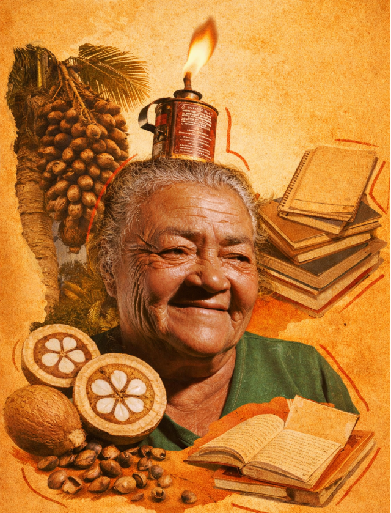

Mais estudantes dentro da universidade e menos barreiras no caminho.
Quem somos
Existimos porque educação popular é ferramenta de transformação coletiva.
O Cursinho Popular Raimunda nasce do compromisso com acesso, permanência e formação crítica. Somos uma rede construída por educadores, voluntários e comunidade.
Nossa história
Mais do que vestibular, construímos acesso real à universidade.
O Cursinho Popular Raimunda foi criado para enfrentar uma realidade concreta: o ensino superior ainda é tratado como privilégio para poucos. Por isso, nosso trabalho vai além do conteúdo. Atuamos para abrir caminhos, fortalecer trajetórias e sustentar uma rede de apoio que acolhe quem chega com sonhos, mas também com dúvidas, medos e pressões do cotidiano.
Nossa prática combina preparação acadêmica, cultural, escuta, orientação e compromisso político com a educação pública. Cada frente do projeto nasce da ideia de que aprender não é repetir matéria: é desenvolver autonomia, repertório e confiança para ocupar espaços historicamente negados.
Somos um cursinho popular porque acreditamos em ensino gratuito, construção coletiva e impacto comunitário. A aprovação importa, mas ela é parte de algo maior: ampliar horizontes e transformar a relação dos educandos/as com o próprio futuro.
Não é apenas aprovar, mas formar sujeitos críticos, capazes de se reconhecer como protagonistas de suas próprias trajetórias e transformar seus territórios.
O projeto existe em rede, com trabalho voluntário e parceria local.
Memória e referência
Raimunda Quebradeira de Coco

Dona Raimunda Gomes da Silva, conhecida como Raimunda Quebradeira de Coco, foi uma liderança rural do Bico do Papagaio, no Tocantins, e se tornou símbolo da luta das quebradeiras de coco babaçu. Sua trajetória reuniu trabalho no campo, organização comunitária e defesa do direito das mulheres de viver da terra com dignidade.
Ao longo da vida, Raimunda ajudou a dar visibilidade à realidade das trabalhadoras extrativistas, enfrentando desigualdade, violência no campo e a ameaça constante aos territórios onde o babaçu sustenta famílias inteiras. Sua voz atravessou comunidades, movimentos sociais, universidades e políticas públicas, sempre ligada à defesa da autonomia das mulheres rurais.
Trazer sua história para o cursinho é reconhecer que educação popular também nasce dessas referências de resistência. Raimunda nos lembra que aprender, ensinar e transformar realidades exige coragem coletiva, enraizamento no território e compromisso com quem historicamente precisou lutar para existir com direitos.
Sua trajetória une trabalho no campo, organização popular e luta por dignidade, um exemplo de que a educação também se faz fora dos muros da universidade.
Trazer seu nome é afirmar que o conhecimento brota no território, nas roças, nos quintais, nas rodas de quebra de coco.
Ocupar espaços historicamente negados às mulheres, à periferia e a todos que sempre precisaram lutar para existir com direitos.